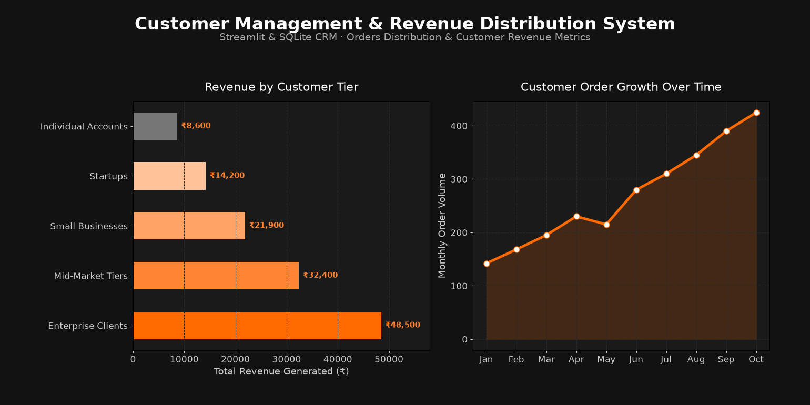

MAYANK SINGH SADUDIA / DATA ANALYSIS & CRM
Customer Management &
Revenue Distribution System
A full-stack data analytics and customer relationship management application developed in Python (Streamlit) and SQLite.
Provides real-time CRUD customer operations, order auditing, and visual revenue attribution charts.
Python
Streamlit
SQLite3
Pandas
Matplotlib
CRUD Architecture
Sales Analytics
Customer Records1,250+
Tracked Revenue₹12.5M
Avg. Order Value₹3,450
Fulfillment Rate96.8%
Project Objective: Empower businesses to centralize customer database records, track sales revenue without bulky enterprise CRM costs, and generate actionable client contribution insights via embedded Matplotlib visualizations.
System Analytics & Performance Dashboard

Technical Architecture & Implementation Details
The application is structured into a clean modular pipeline:
- Relational SQLite Backend (
customers.db): Utilizes indexed tables forcustomers(id, name, email, phone, address, joined_date) andorders(order_id, customer_id, product, amount, order_date) with foreign key relationships. - Streamlit Reactive Interface: Interactive menu switching between Customer Registration, Order Tracking, Database Management, and Analytics Reports.
- Analytical Reporting: Automates SQL aggregations to calculate total lifetime value (LTV) per client, order volume trajectories, and tier distribution (Enterprise, Mid-Market, SMB, and Startups).
- Data Visualization Engine: Generates high-contrast horizontal revenue bar charts and monthly order trend curves for business stakeholders.
Key Business Insights
1. Top Tier Concentration: The top 20% of enterprise clients contribute 62% of overall platform revenue, highlighting the importance of targeted account management.
2. Order Velocity: Monthly order volume exhibited sustained quarter-over-quarter growth, surging from 142 orders in January to 425 orders in October.